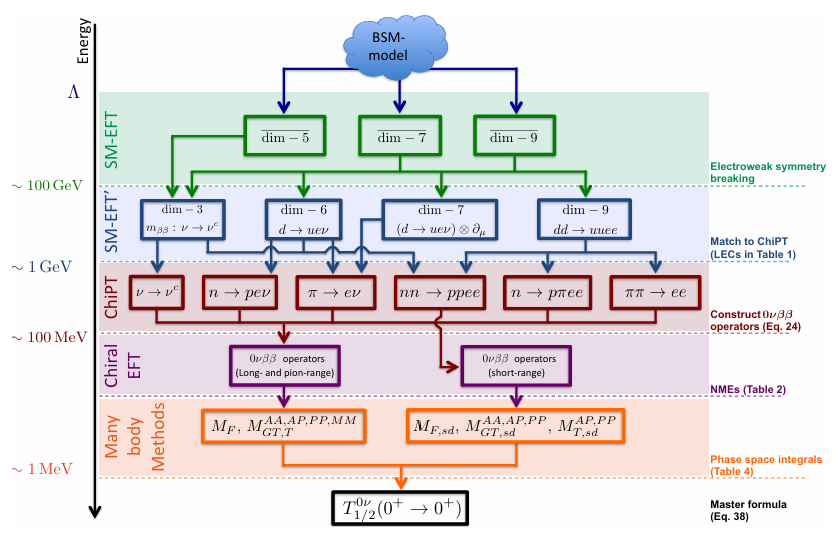

welcome to my personalpage, you can contact me through email...
Contact
Chenrong Ding
Nuclear Theory and Nuclear Astrophysics Group,Sun Yat-sen University
dingchr3@mail2.sysu.edu.cn
中国广东省珠海市香洲区唐家湾大学路2号中山大学 翰林3号B313/22
Research
Research interests
1. Neutrinoless double beta decay
Neutrinoless double-beta (0νββ) decay is a hypothetical second-order weak-interaction process in which an even-even
nucleus decays into its neighbouring even-even nucleus with two fewer neutrons and two more protons, with the emission
of only two electrons (as shown in the following figure). The observation of this process would provide direct evidence for the existence of lepton
numberviolation processes in nature and implies the existence
of a Majorana mass term for the neutrino. As a result, the
search for 0νββ decay in atomic nuclei has been a significant
research frontier in particle and nuclear physics. However, to date, no signal has been observed.
figure 1. The nuclear double-beta decay (a) and neutrinoless-double-beta decay(b).
If 0νββ decay is mainly driven by the mechanism of exchanging light Majorana neutrinos, the half-life of 0νββ decay provides a way to determine the absolute masses of neutrinos, provided that the nuclear matrix element (NME)
is known. The NME cannot be measured experimentally but relies on nuclear model calculations. However, various nuclear models predict NMEs that differ from each other by a factor of about three or even more, causing a large uncertainty in the extracted effective
Majorana neutrino mass from the half-life of 0νββ decay.
Currently, I have participated in and completed three projects corresponding to neutrinoless double-beta decay (see publications 1, 2, 3, and 4 for details), all of which are based on the framework of multi-reference covariant density functional theory.
I have considered some many-body effects, calculated some NMEs, and taken into account contributions from non-standard decay mechanisms. I have also participated in uncertainty analysis of NMEs... but all of the above are not closely related to the PhD topic I have in mind.
Based on personal interest, I hope to conduct research within ab initio framework. Therefore, I am currently struggling with ab initio calculations of NMEs of heavy candidate nucleus... Wish me luck!
2. Nuclear ab initio calculation
In the past decade, significant progress has been made in the development of nuclear ab initio methods, which rely on nuclear interactions derived from chiral effective-field theory.
The in-medium similarity renormalization group (IMSRG) method, which employs a flow equation to systematically decouple high-energy from low-energy degrees of freedom, has emerged as a promising ab initio approach for addressing heavier nuclei.
The ab initio in-medium generator coordinate method (IM-GCM), which combines the IMSRG and PGCM into a single consistent framework, exploits the IMSRG to capture dynamic correlations associated with
high-energy few-particle few-hole excitations and PGCM to include the collective (or static) correlations associated with pairing and deformation.
After spending several months, I finally got the IMGCM code running on my end. I have involved in a research project on nuclear shape coexistence (see publication 5 for details), where I generated a series of interactions and performed some preliminary calculations.
Currently, I am working on something not too difficult but quite interesting, which is studying the evolution of the shell structures of close-shell nuclei.
Special advertisement: If your work requires chiral nuclear forces or interactions evolved using IMSRG, feel free to reach out for collaboration! Currently, I can offer a full-service solution from generating nuclear forces to evolving interactions! To make myself more "useful",
I will soon learn to write programs for operator evolution, and then we can use these tools together to do more interesting works! (^_^)
3. Effective field theory at the nuclear energy scale
On this matter, I currently have no experience or ideas. Perhaps, following the approach shown in the figure below, we can perform some renormalization group runs of the interactions at a lower energy scale and match the degrees of freedom...

figure 2. A schematic overview of the effective field theory approach to evaluating the 0νββ decay amplitude starting from high-scale dynamics.
Think about it—if we could completely combine different energy scales in nuclear theory research through a self-consistent effective theory approach. And then all the low-energy coupling constants could be derived from high-energy physics, without the needs to fit low-energy data...
How exciting does that sound! (Maybe I will make some attempts in the future, but this is definitely not my PhD topic!)
Publications
1. Impact of isovector pairing fluctuations on neutrinoless double-𝛽 decay in multireference covariant density functional theory,
CRD, X. Zhang, J. M. Yao*, P. Ring, and J. Meng, Phys. Rev. C 108, 054304(2023)
2. Nuclear matrix elements of neutrinoless double-beta decay in covariant density functional theory with different mechanisms,
CRD, G. Li, and J. M. Yao*, Phys. Lett. B 856, 138896(2024)
3. Subspace-projected multireference covariant density functional theory,
X. Zhang, C. C. Wang, CRD, and J. M. Yao*, arXiv:2408.00691(2024)
4. Global sensitivity analysis and uncertainty quantification of nuclear low-lying states and double-beta decay with a covariant energy density functional,
X. Zhang, C. C. Wang, CRD, and J. M. Yao*, arXiv:2408.13209(2024)
5. Ab initio nuclear shape coexistence and emergence of island of inversion around N = 20,
E. F. Zhou, CRD, J. M. Yao*, B. Bally, H. Hergert, C. F. Jiao, and T. R. Rodriguez, arXiv:2410.23113(2024)
Education background
2019.09 - 2023.06: Bachelor's degree, Sun Yat-sen University
2023.09 - Present: Ph. D., Sun Yat-sen University
Fun
Hiking, rock climbing, skiing, surfing... I'm not interested in any of those. If you like playing badminton and are much better than me, there's no need to invite me either...